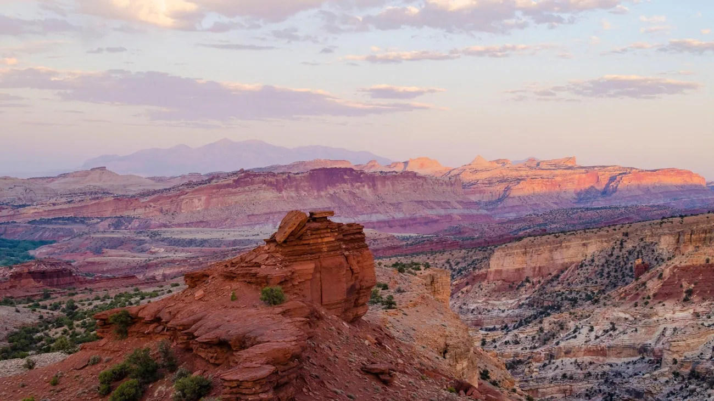

SOURCE-REVIEWED · Capitol Reef National Park
Sunset Point
Watch the Waterpocket Fold’s cliffs change color as the light softens. This short walk offers a wide-open panorama and a reason to pause together, whether you visit in daylight or plan carefully for sunset. Bring a headlamp if you stay late: the return is part of the adventure too.

- Location
- Capitol Reef National Park
- Experience
- First Steps
- Landscape
- Desert & red rock
- Planning seasons
- Spring, Summer, Fall, Winter
- Distance
- 0.8 miles
- Elevation gain
- Less than 50 ft elevation change (NPS); cumulative gain not published
- Approximate duration
- About 30–45 minutes walking (editorial estimate for 0.8 mile); add time to watch the sunset
- Route type
- Out and back; NPS lists 0.4 mile one-way
- Trail surface
- Unpaved; NPS describes these easy trails as uneven but fairly level. Exact route-specific surface composition not published in the reviewed guide.
- Terrain
- Maintained path
- Estimated difficulty
- Easy (NPS): uneven ground, fairly level
- Trailhead
- End of the dirt Panorama Point Road, about one mile from the highway turnoff at Panorama Point; consult the official NPS route information
Why this hike is worthwhile
Watch the Waterpocket Fold’s cliffs change color as the light softens. This short walk offers a wide-open panorama and a reason to pause together, whether you visit in daylight or plan carefully for sunset. Bring a headlamp if you stay late: the return is part of the adventure too.
Know Before You Go
Preparation
Bring water, sun protection, and a map. If visiting for sunset, allow time to walk both directions, pack layers, and carry a headlamp rather than relying only on a phone light.
Seasonal hazards
Uneven ground and fading light can make the return harder. The park warns about intense summer sun, monsoon storms, and flash floods. Winter ice, snow, and cold can change a short trail’s demands; check conditions before choosing it.
Seasons and weather
NPS lists the sunset-viewing activity year-round. All four seasons are therefore searchable, but this is not a promise of beginner-friendly conditions on any date. Avoid extreme heat, storms, or icy footing; winter can require different skills and equipment.
Plan for all types of weather and carry water. For sunset, bring a warm layer for the return and do not remain at exposed viewpoints during lightning. Dirt-road access can be affected by weather; check current road information.
Fees
NPS’s reviewed sunset-activity and fee pages say fees apply for recreating in the park; the general fee page lists $20 for a standard private vehicle. Confirm the fee/pass requirements for your route and full itinerary with NPS before visiting; this guide does not promise fee-free access to the viewpoint.
Access and restrictions
Use the designated trail and confirm dirt-road and trail access with the park. Pets are not permitted on this hike according to the NPS sunset activity page. This guide covers Sunset Point at Capitol Reef, not the similarly named viewpoint at Bryce Canyon.
Official information and verification
- NPS: Capitol Reef trail guide, one-way distance and elevation change
- NPS: Watch the Sunset, access directions and year-round season
- NPS: easy/moderate trails and unpaved surfaces
- NPS: Capitol Reef safety
- NPS: Capitol Reef fees and passes
Last source review: 2026-10-21
NPS lists 0.4 mile one-way; this guide doubles it for a 0.8-mile return outing. The published elevation change is a less-than-50-foot bound, not an exact cumulative gain, so no numeric gain is invented or used in gain filtering. Duration is an editorial walking-time estimate, excluding sunset viewing. General NPS surface descriptions cover multiple trails; exact composition is not asserted.
Build your trail confidence ↗